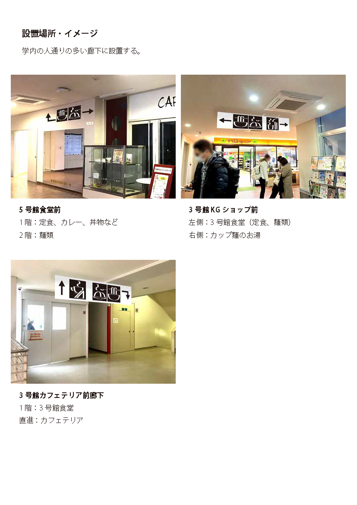

情報誌 近江町市場のスイーツ特集
情報を詰めつつも落ち着いた印象の紙面
- 作品概要
- 近江町市場に取材に行き。スイーツ店というテーマに絞って雑誌の見開きを制作しました。限られた紙面に多くの情報を載せるため、写真や文字の配置を工夫し、情報の関係性が崩れないように注意しました。
- 制作時期／種別
- 2023年1月／雑誌デザイン
- 使用ツール
- Photoshop（写真加工）
- Illustrator（レイアウト）
生地蒲鉾 ロゴリデザイン
かまぼこのポップな印象を引き出すロゴ
- 作品概要
- 既存の企業・ブランドロゴを別の解釈でリデザインする課題でした。染物の紺地に屋号をそのまま用い、老舗であることをアピールする元ロゴに対して、かまぼこの質感と色彩をイメージしてぷりっとした印象のロゴに仕上げました。
- 制作時期／種別
- 2022年11月／ロゴデザイン
- 使用ツール
- Illustrator
小学校の「遊び場」案内ピクトグラム
小学生のあるあるをユーモラスに表現
- 作品概要
- 「小学生が学校敷地内でいたずらできる場所への案内版」というコンセプトで制作しました。最初はいたずら未満の微笑ましい行為が徐々にエスカレートしていき、最後には校長室で反省しているストーリーを作りました。
- 制作時期／種別
- 2023年1月／ピクトグラム
- 使用ツール
- Illustrator
読み聞かせ絵本「ねずみの彫り物」
なるべく短く簡潔にまとめた昔ばなし
①むかし、吉四六（きっちょむ）さんと言う人が、庄屋さんの家へ行くと、庄屋さんはネズミの彫り物を眺めていました。
②「これは有名な作家のものなんじゃ。」
庄屋さんが自慢するので、意地っ張りの吉四六さんはつい、
③「俺の家にあるネズミの彫り物の方がよくできてますよ。」
と、言いました。
④庄屋さんは機嫌を悪くして、
「明日もってこい。比べてみるぞ。」と約束しました。
⑤家に帰った吉四六さんは、自分でネズミを彫り始めました。
⑥次の日、できあがったネズミと庄屋さんのネズミを比べてみました。
⑦が、吉四六さんのネズミは、不細工です。
それでも吉四六さんは自信たっぷりで、
⑧「ネズミなら、猫に見て貰うのが公平でしょう。」
と猫を連れてきました。
⑨すると、猫は吉四六さんのネズミをくわえて逃げ出していきました。
⑩なんと、吉四六さんの勝ちです！
庄屋さんのくやしがること。
⑪実は吉四六さんのネズミは、カツオブシで彫ってあったのです。
おしまい。
- 作品概要
- 「ねずみの彫り物」という昔話を読み聞かせ絵本にしました。1枚当たりのテキスト量を可能な限り削り、10秒以内に収まるようにしています。
- 制作時期／種別
- 2023年5月／イラスト
- 使用ツール
- Adobe Fresco
オリジナル名刺
名前と性格から発想したユニークな名刺
- 作品概要
- 自分の名前を、自らの性格からデザインしたイラストの中に落とし込んでデザインしました。
- 制作時期／種別
- 2022年12月／名刺
- 使用ツール
- Illustrator
イニシャルロゴ
リボンがねじれる様子モチーフのロゴ
- 作品概要
- 私のイニシャルの「S・M」からロゴをデザインしました。角をわずかに丸めたり、緩やかなアールを使用することで柔らかで流れるような印象にしています。
- 制作時期／種別
- 2022年11月／ロゴマーク
- 使用ツール
- Illustrator
アイデアスケッチ
金沢学院大学 食事処ピクトグラム
大学の「KG」ロゴをイメージした案内板
- 作品概要
- 学内の食事関連施設への案内ピクトグラムを制作しました。手描き感の出るように形に注意を払いました。
- 制作時期／種別
- 2023年1月／ピクトグラム
- 使用ツール
- Illustrator
設置イメージ
能美市「Art Project for SDGs」海洋ゴミアート
能美市の花鳥風月を海洋漂着ごみで表現

- 作品概要
- 国民文化祭の一環として、能美市で海洋漂着ゴミを利用したアート作品が制作され、私は原画デザインで協力しました。 その他、このプロジェクトでは金沢学院大学生によるドキュメンタリーも制作されており、一部撮影に協力しています。
- 制作時期／種別
- 2023年7月／デザイン仕上げ
- 使用ツール
- Photoshop
完成した海洋ゴミアート
写真引用元：https://nomisdgs.jp/news/2486.html
原画をもとに、市内3中学校の美術部員たちが協力して、海岸で集めたごみをアート作品として完成させました。